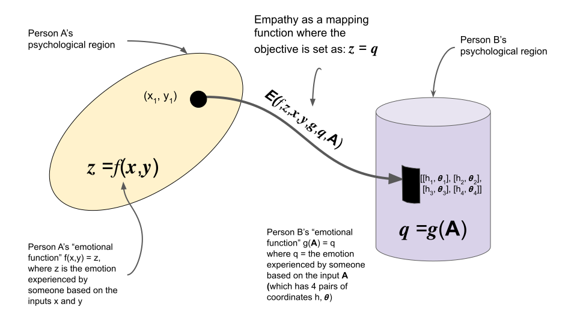

(very much so) freewriting with an hour of edits to make it more coherent. bear with me.
if the group doesn't matter, the individual doesn't matter. since both do, so does the other. the point is not to dissolve the group or the individual. the point is to make true channels of empathy so that we can bring our best selves for ourselves and others. it is not simply about changing the definitions of masculinity, or the way we assign currency to objects both animate and inanimate, or how we determine worth (note: it is about observing the forces that drive those outcomes. focusing on surface layer tells you something about the last decision that was made. in order to understand the momentum of ideas we have to look at the deeper layers. i am more interested in the first decision made than the last one. that tells you the velocity of the entity that is culture. in a cornier way: to go through the flame you must become the flame.)
why am i the way i am? some of it must have to do with me but some of it must have to do with you. a friend once texted me in jest: "enjoy this song. or don't. you make your own decisions." there is a slippery slope we could go on starting from that point, but the fact that it's a slippery slope means it's not logical so we won't go on it lest we slip on thy slope.
empathy is understanding that i think we are saying the same thing from different sides of the fence. it's actually not the same as agreeableness. that's a different thing for different ends (or means? as in, there is no value to that viewpoint other than having that viewpoint---that viewpoint that unlimited agreeableness is healthy). empathy means "oh that's what you think, hmm, i think am able to map what i think from my space to what you think in your space." this leads to a sort of geometry to psychology. like kurt lewin's topological psychology, which, in my opinion, is just the coolest tool to model our thoughts and emotions. in it, he explains how psychological regions have boundaries and locomotions between them. some locomotions are technically impossible (which is usually the most practical usage of a concept) and so some regions cannot be accessed from where you are. empathy is then a tool to map between an inaccessible psychological region and your current psychological region. it requires a bit of faith at first, but eventually it is exhilirating to make sense of it without pure faith.

empathy as a mapping function. taking coordinates from one space and mapping to another such that even if they look different, they represent the same emotions. i think that's what vulnerability, connection, and compatibility are about: being able to use that mapping function in daily life. empathy as a means to translate emotions---not to communicate them but to experience them. i may not share your life experience, but i may share one that elicits the same emotion in me. analogy is the best tool for empathy. analogy is the mapping from one space to another. in language, we see that as written or spoken analogies. in engineering, it may be the conversion from solar to electrical energy, or thermal to mechanical energy. all of them are analogies. analogies between analogies build the backdrop to those surface analogies. there are layers of this because analogies are recursive. you can't simply have the concept of analogy in the form of a word "analogy" and not have recursive analogy. if the thing that we say is both the definition and an example of the meaning that we are conveying then there's no limit to its recursive behavior. but, that doesn't it is infinitely recursive in the same direction. it certainly has momentum, which builds stronger over time, but it can also be persistently reset until it shifts.
this takes me back to the velocity of culture. the scale of the culture affects the acceleration or inertia of culture, but even if it's at a small scale, such as the culture of self, a family, a group of friends or a company, the fact that it has a velocity does not change. velocity is inherent to culture because culture can be thought of as a set of associations or analogies that everyone agrees upon. that doesn't mean it's easy to understand or identify the velocity of culture. it may be a 5 dimensional entity which we have no reliable way of mapping to a 4 or 3 dimensional world, meaning we may not be able to even map it to a space that we can't even see in our mind's eye but can only experience through emotion, a non-visualizable dimension. maybe visualize(the velocity of culture) = TypeError velocity cannot be of type culture for the visualize function. if the visualization of something is not possible, given the time constraints and knowledge gaps between us, the closest we can get to it is an analogy. this is the recursive nature of analogies in play. the only way to explain an analogy (or isomorphism) is another analogy. i think it may be feasible to attempt an argument that the only thing that exists is an analogy. in a cliche sense, the sensory data we receive is translated from one space to another---sound/taste/touch/sight/smell to thoughts, feelings and emotions through our hardware.
associations as analogies of analogies, or isomorphisms of isomorphisms. meta-analogies. meta-isomorphisms. a short tangent--how thought permeates through a culture is through some level of hypernormal association. it's like an addiction or infection. it exponentially multiplies or associates. exponential association. a sketch on a napkin turns into a symbol in a magazine which leads to people spending thousands of dollars around it. associating more than what something maybe *should* translate between. fervor for a sports team, for example. or the association between self-worth and productivity, anatomical proportions and properties to sex appeal, psychological safety to the dedication to or worship of a symbol. our empathy is extremely prone to getting hijacked because of the exponential nature of association through group-thinking. it starts as only the first layer of associations getting hijacked and over time the associations retrain even deeper layers. this is not always maladaptive. neuroplasticity is also adaptive. it's really easy to develop one layer of associations but really hard, yet not impossible, to do two. it takes a lot of energy. and capacity. we may have things in our memory that still trigger us so that we can't fully process the new information (in a familiar old format) presented to us by life. our mapping functions may have leaks in them.
empathy as intelligence. no i do not mean that your (or my) definition of empathy is intelligent. i am saying that intelligence can be thought of as the ability to adaptively map information that is either new to your space or lives in a space that you are unfamiliar with to the space your psychological region resides in or some other space. i am very interested in the associations you make. because even if your association is completely superficially different, we may use some similar association that i want to bond with you around. there's a landing spot. i think the further away two people are in terms of how they make associations, or associations of associations (analogies of analogies of analogies of analogies) the harder it is to find a mapping function. similarly, the further away two people's ability to use mapping functions, the less it matters that your associations are close.
empathy as generalization. no i am not saying that you have more empathy if you are a generalist. but perhaps the most exciting analogy there is is that empathy is to humans what generalization is to disciplines of study. the most beautiful formulas in math are the most complex not only because complexity is beautiful but because they work across disciplines. those are the functions that are the "analogies" of functions. they apply to diverse applications. generalization can be thought of as the identification of a shared first principle.